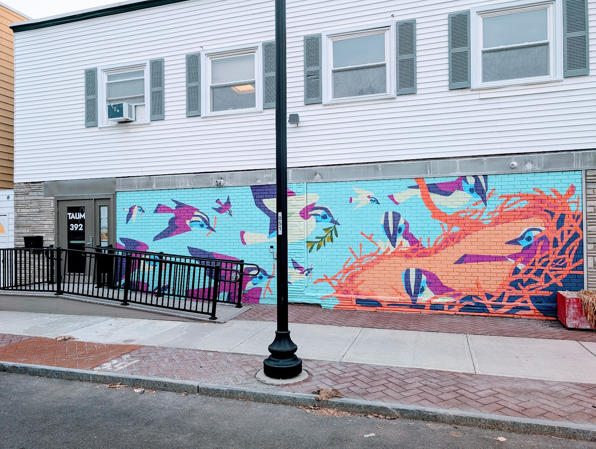

Contact
Come say hello.
392 2nd Street, Troy, NY 12180 · Office hours Monday to Friday, 9 am to 4 pm · (518) 274-5920 · lmalatesta@taum.org

Who to call
| About | Person | Reach them |
|---|---|---|
| General questions | Lynn Malatesta, Office Administrator | (518) 274-5920 · lmalatesta@taum.org |
| Furniture, giving or receiving | Tyara Burnett, Program Director | x204 |
| Meals & the Damien Center | Barbara Healey, Coordinator | x206 |
| Tech for Teens, scholarships, donations, building use | Rev. Abby Norton-Levering, Executive Director | x202 · nortonlevering@taum.org |
| Sage campus chaplaincy | Darren Gundrum, Chaplain | 518-244-4522 · gundrd@sage.edu |